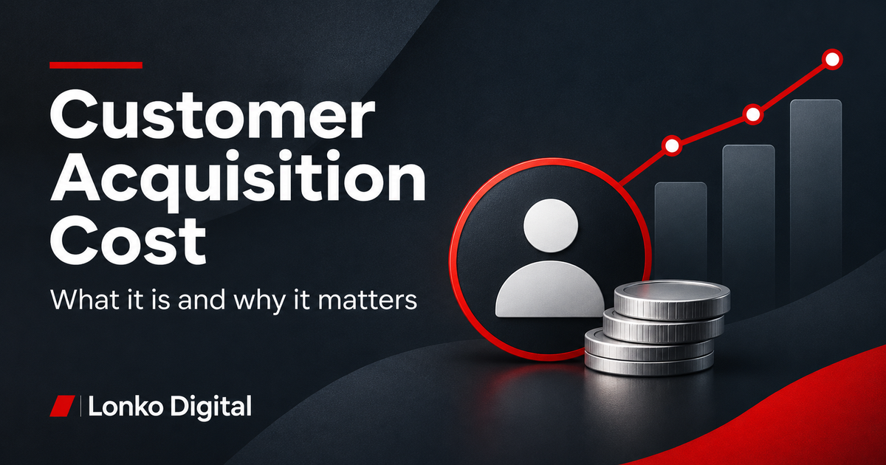

Customer Acquisition Cost (CAC): Formula, Examples and What to Include
10 min read

Last updated: November 20, 2026
Customer acquisition cost (CAC) is the total amount you spend to win one new customer. To calculate it, add up everything you spent on sales and marketing in a period and divide by the number of new customers you gained in that same period. A business that spends $5,000 and wins 25 customers has a CAC of $200.
That simple number answers a question every owner eventually asks: are we paying more to win customers than they are worth? This guide shows the formula, works through an example, lists which costs belong in it (the part most explanations skip), explains how CAC differs from cost per acquisition, and covers the LTV to CAC ratio and practical ways to lower your CAC.
The customer acquisition cost formula
CAC = total sales and marketing costs in a period ÷ number of new customers gained in that period
Three rules keep the number honest:
- Same period on both sides. If you count three months of costs, count three months of new customers.
- New customers only. Repeat purchases and renewals from existing customers do not belong in the count.
- All acquisition costs, not just ads. Ad spend is usually only part of the cost of winning a customer.
A worked example
Illustrative example (not a benchmark): a home services company reviews one quarter.
| Cost (one quarter) | Amount |
|---|---|
| Google Ads spend | $4,500 |
| Facebook and Instagram ads spend | $1,500 |
| Agency management fee | $2,400 |
| Marketing tools (CRM, call tracking, scheduling) | $600 |
| Share of the office manager's time spent on sales calls | $3,000 |
| Total acquisition costs | $12,000 |
The company gained 60 new customers in the quarter.
CAC = $12,000 ÷ 60 = $200 per customer.
Now look at what happens if the company counted ad spend only: $6,000 ÷ 60 = $100. That figure looks twice as good, and it is wrong. The fees, tools and staff time were all part of winning those customers.
Which costs to include in CAC
A useful CAC includes every cost you would not have if you stopped trying to win new customers. Typical items:
- Advertising spend on every channel: search, social, display, directories and print.
- Agency and freelancer fees for running campaigns, creating ads or managing SEO.
- Marketing and sales software, such as a CRM, email platform, call tracking or scheduling tools, or the share used for acquisition.
- Salaries and commissions for the time people spend on marketing and sales. In a small business, that often means a share of the owner's or office manager's time.
- Content and creative, such as photography, video, design and written content.
- Promotions and offers used to win first-time customers, such as a first-visit discount.
- Events and sponsorships aimed at finding new customers.
What to leave out: costs of serving existing customers, such as account management, customer support and loyalty programs. Those belong in the cost of keeping customers, not winning them.
If you are unsure where a cost belongs, choose one rule, write it down and apply it the same way every period. A CAC that is calculated consistently is more useful than one that is calculated perfectly once.
CAC by channel
Your blended CAC covers every channel together. To decide where to put the next dollar, also calculate CAC for each channel: the costs of that channel divided by the new customers it produced.
Ad platforms report cost per lead, not cost per customer, so you need your own close rate to get from one to the other:
Channel CAC (ads only) = cost per lead ÷ share of leads that become customers
Illustrative example (not a benchmark): benchmark reports put the median cost per lead from Facebook lead campaigns at $27.66 (WordStream by LocaliQ, data April 2024 to June 2025, US) and the average cost per lead from search advertising at $66.69 (LocaliQ, 2026 benchmarks). These two figures come from different sources and periods, a median for Facebook lead campaigns and an average for search, so they are not a like-for-like comparison. If 1 in 5 Facebook leads and 1 in 3 search leads became customers, the ad cost per customer would be about $138 for Facebook and about $200 for search. With different close rates, the ranking could flip. That is why your own data matters more than any average.
For what each platform costs and how its auction works, see our guides on Facebook and Instagram ads cost and Google Ads cost.
CAC vs cost per acquisition (CPA)
The two terms sound alike and are often confused. They measure different things.
| Customer acquisition cost (CAC) | Cost per acquisition (CPA) | |
|---|---|---|
| What it measures | Total cost to win one new paying customer | Cost of one conversion from an ad or campaign |
| What counts as an "acquisition" | A new customer | Any action you define: a lead, a call, a sign-up or a sale |
| Costs included | All sales and marketing costs | Usually ad spend only |
| Where you find it | Your own books and CRM | Inside the ad platform |
| Scope | The whole business or a channel | One campaign, ad group or ad |
| Best used for | Judging whether growth is profitable | Optimizing campaigns day to day |
Google Ads defines average CPA as "the average amount you've been charged for a conversion from your ad," calculated by dividing the total cost of conversions by the number of conversions. A campaign can have a low CPA and the business can still have a high CAC, for example when many leads never buy, or when fees and staff time are large compared with ad spend.
The LTV to CAC ratio
CAC means little on its own. A $500 CAC is expensive for a $60 haircut and cheap for a $15,000 kitchen remodel. The LTV to CAC ratio puts it in context by comparing what a customer is worth with what it cost to win them.
LTV to CAC ratio = customer lifetime value ÷ customer acquisition cost
Customer lifetime value (LTV) is the gross profit a customer brings in over the whole relationship. A simple version: average revenue per customer per year × gross margin × average number of years a customer stays.
Illustrative example (not a benchmark): a customer spends $1,200 a year at a 50% gross margin and stays for 2 years. LTV = $1,200 × 50% × 2 = $1,200. With the $200 CAC from the earlier example, the LTV to CAC ratio is 6 to 1.
What is a good LTV to CAC ratio?
A commonly cited benchmark is 3 to 1. It comes from David Skok's "SaaS Metrics 2.0" on For Entrepreneurs (first published January 2013, updated June 2026), which says "the best SaaS businesses have a LTV to CAC ratio that is higher than 3, sometimes as high as 7 or 8."
Two cautions. First, that guideline was written for subscription software businesses, so treat it as a reference point rather than a rule for every industry. Second, a ratio far above 3 to 1 is not always good news: it can mean you are underinvesting in growth and leaving customers to competitors. Skok's same article stresses that "these are only guidelines" and that there are situations where it makes sense to break them.
A ratio near or below 1 to 1 is a clear warning. It means you spend about as much to win a customer as that customer is worth, or more.
How to lower your customer acquisition cost
Most ways to lower CAC fall into two groups: spend less per lead, or turn more leads into customers. The second is often cheaper.
- Improve your close rate. Answer leads fast, follow up consistently and make it easy to book. Every extra customer from the same leads lowers CAC directly.
- Fix the landing page. A clearer page with one obvious next step turns more visits into leads without raising ad spend.
- Cut the channels and campaigns that do not produce customers. Use channel CAC, not clicks or cost per lead, to decide.
- Track conversions properly. If you cannot see which campaigns produce customers, you cannot shift budget toward them. If your numbers suddenly look wrong, see what to check first when Google Ads conversions drop.
- Grow referrals and repeat business. Customers who come through referrals or come back cost far less to win, and longer relationships raise LTV, which improves the ratio from the other side.
- Review fees and tools. Make sure every agency fee and subscription in your CAC is paying for itself. Our guide on how to tell if your Google Ads agency is doing a good job can help with the first.
FAQ
What is a good customer acquisition cost?
There is no single good number, because CAC only makes sense next to what a customer is worth. A useful test is the LTV to CAC ratio: a commonly cited benchmark, from David Skok's SaaS Metrics 2.0, is a lifetime value at least three times CAC. A CAC close to or above lifetime value is a warning sign.
What is the difference between CAC and CPA?
CAC is the total cost of winning one new paying customer, including ads, fees, tools and staff time. CPA is the cost of one conversion in an ad platform, such as a lead or a sign-up, and usually covers ad spend only. CPA helps you run campaigns; CAC tells you whether growth is profitable.
How do you calculate CAC for a small business?
Add up a period's sales and marketing costs, including ad spend, agency fees, marketing tools and a fair share of your own or your staff's time spent winning customers. Divide by the number of new customers gained in the same period. Use the same rules every period so the trend is meaningful.
What is a good LTV to CAC ratio?
The commonly cited benchmark is 3 to 1, from David Skok's SaaS Metrics 2.0, written for subscription software businesses. Treat it as a reference point. Below 1 to 1 means you spend more to win a customer than the customer is worth; well above 3 to 1 may mean you could invest more in growth.
How can I lower my CAC?
Turn more of your existing leads into customers by responding faster and following up, improve your landing pages, cut channels that do not produce customers, track conversions properly, and grow referrals and repeat business. Review agency fees and tools so every cost in your CAC is earning its place.
How Lonko Digital looks at this
What is happening is that each ad platform reports its own cost per lead, while profit depends on cost per customer. It matters because a cheap lead can still be an expensive customer. What to do next is calculate CAC with all costs included and compare it with what a customer is worth. At Lonko Digital, we are building tools to help business owners read signals like this, starting with Google Ads. The software is still in development and not available to customers yet. Read more about Lonko Digital, browse our Insights, or start with our Google Ads cost guide. To get new pieces, subscribe to Notes or follow us on LinkedIn and Facebook.